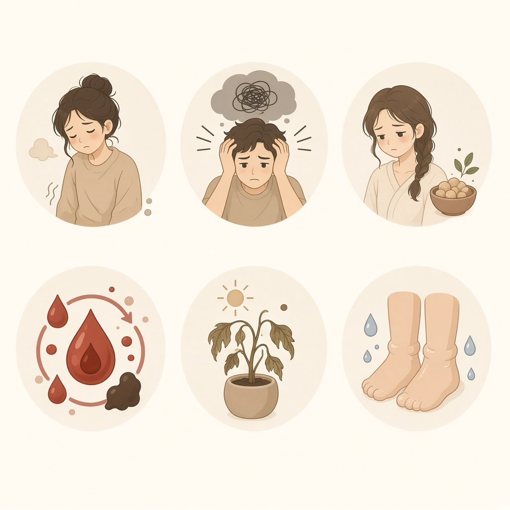
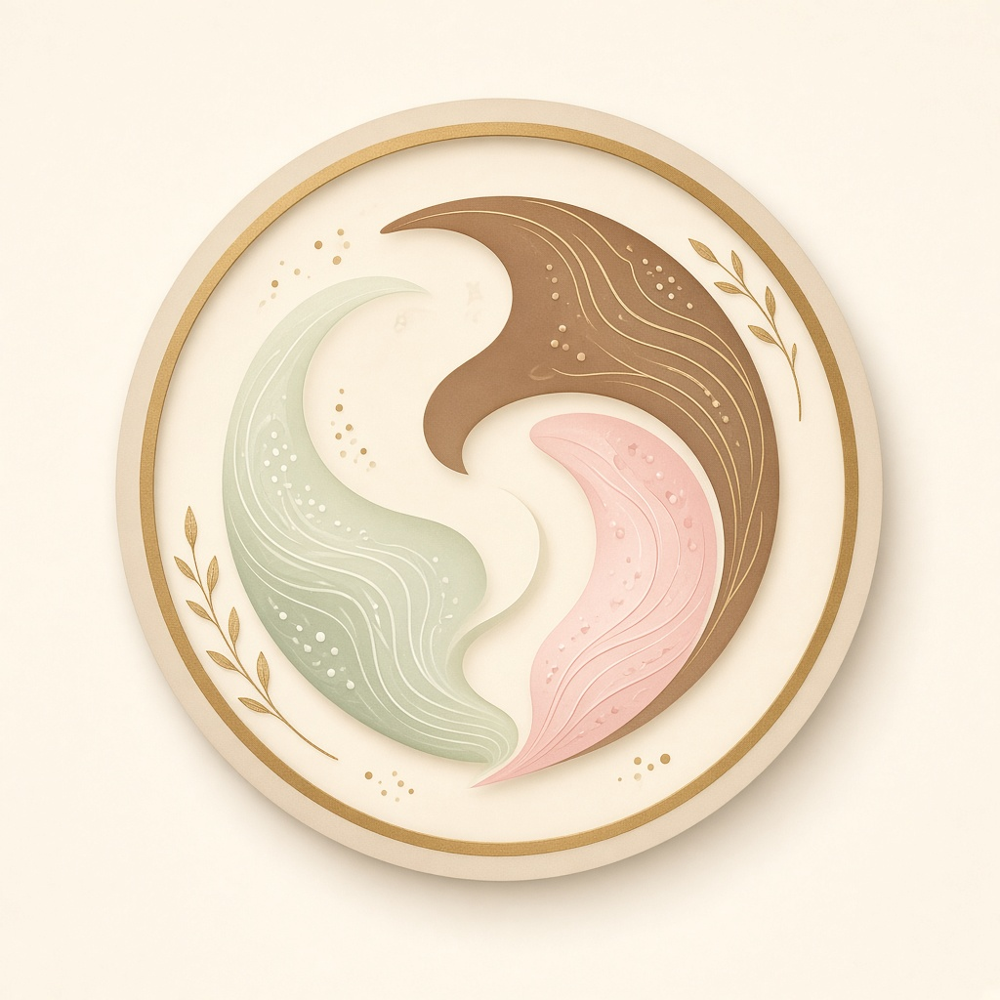

6つの体質タイプ
足りていない（気虚・血虚・陰虚）と 巡りが悪い（気滞・瘀血・水滞）に分かれてチェックします。 当てはまる項目が多いほど、その傾向が強くなります。
チェックシート
各タイプ10項目／合計を見ながらチェック
診断結果
体質バランスグラフ 気･血･水

ぎふ市民健康まつり
あなたはどのタイプ？該当する□にチェックしてください。
（一社）岐阜市薬剤師会

足りていない（気虚・血虚・陰虚）と 巡りが悪い（気滞・瘀血・水滞）に分かれてチェックします。 当てはまる項目が多いほど、その傾向が強くなります。
各タイプ10項目／合計を見ながらチェック
体質バランスグラフ 気･血･水